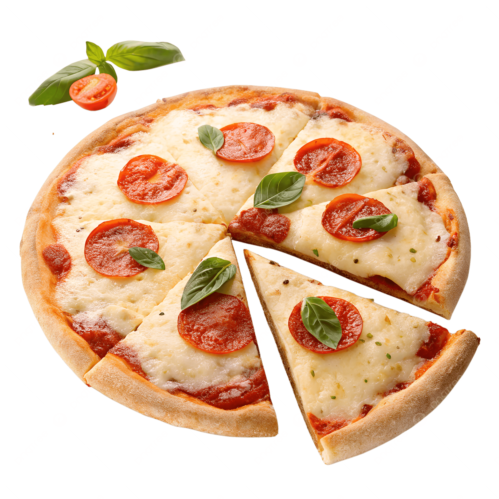
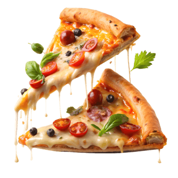

Food is any substance consumed to provide nutritional support for an organism. Food is usually of plant, animal or fungal origin, and contains essential nutrients, such as carbohydrates, fats, proteins, vitamins, or minerals.

Pizza
 Pizza (Italian: [ˈpittsa], Neapolitan: [ˈpittsə]) is a savory dish of Italian origin consisting of a usually round, flattened base of leavened wheat-based dough topped with tomatoes, cheese, and often various other ingredients (such as anchovies, mushrooms, onions, olives, pineapple, meat, etc.), which is then baked at a high temperature, traditionally in a wood-fired oven.[1] A small pizza is sometimes called a pizzetta. A person who makes pizza is known as a pizzaiolo.